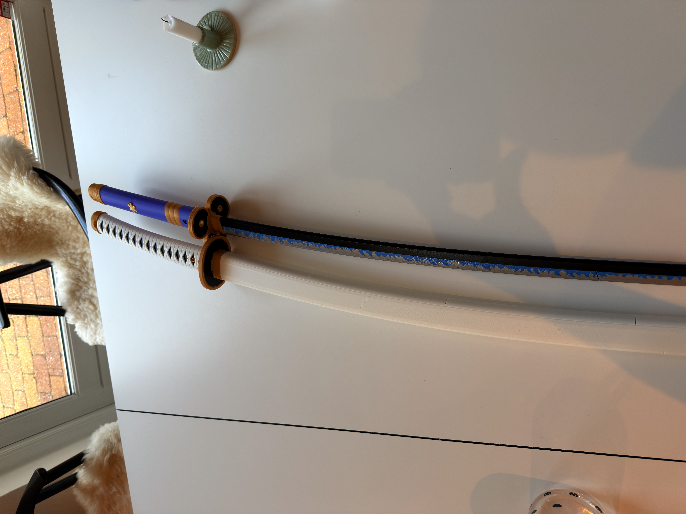
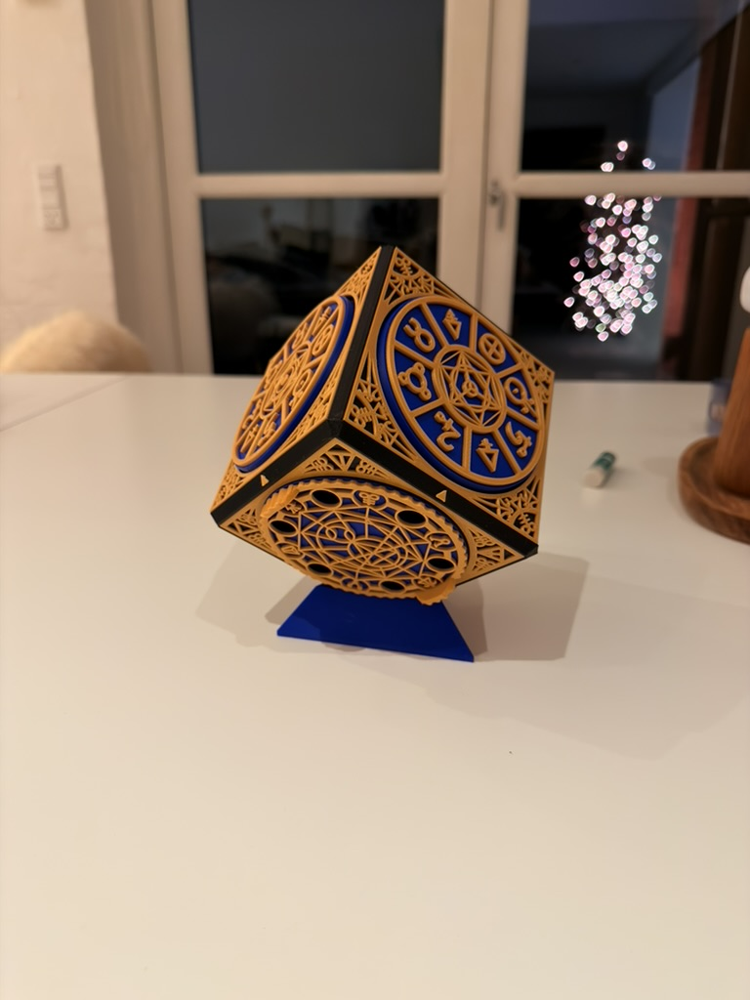
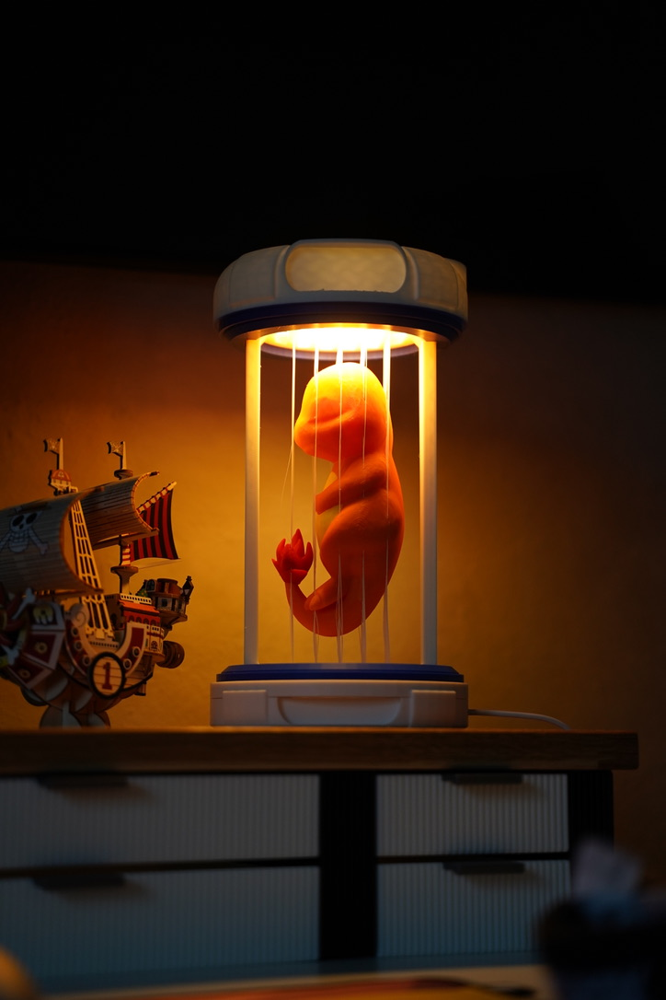

My Interests
- Fitness
- 3d Printing
- Fotografi
- Lave/spise mad
Fitness
I love going to the gym, and i train 3 times a week.
I have been training for 3 years, however i have had a break of half a
year.
My goal is to achieve a 100kg bench press PR
My current achievements:
Bench Press PR: 90kg
Lat Pulldown WW: 90kg
Squat WW: 115kg
3d Printing
I have a 3d printer at home, and i love printing random things for
decoration or fun.
My printer is the Bambu Lab P2S with AMS Pro 2, so i can print in 4
colors.
I have in total around 12 different colors, and 40-50kg of filament :D
Here are a couple of things i have printed:


